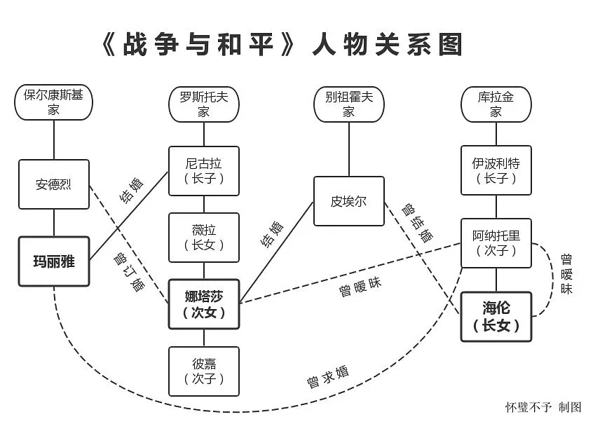

之前那篇《战争与和平》：反英雄主义的英雄赞歌”，我从几位男性人物入手，探讨了托尔斯泰的历史观。这一篇则反行其道，从几位女性人物入手，谈谈托尔斯泰的女性观。
值得注意的是，托尔斯泰作为十九世纪的俄国贵族，他对待女性的观点有一些时代的局限性，而他之所以成为世界闻名的文学巨擘，也在于他能够将他不认同或者批判的人物，塑造得活灵活现、扣人心弦，即便在百余年后的今天，仍然具有不可估量的思想价值和艺术魅力。
《战争与和平》的时间跨度是从1805年1812年，娜塔莎初次出场只有十三岁，到了1812年，也不过二十岁。在众多《战争与和平》改编的影视剧中，只有1966年苏联版的女演员，成功诠释了娜塔莎天真活泼的十三岁、情窦初开的十六岁，以及痛失所爱的二十岁。其他版本几乎都感觉不出女主角的年龄变化。
在塑造娜塔莎这个人物时，托尔斯泰几乎倾注了他对女性的最高评价。娜塔莎活泼可爱，能歌善舞，没有等级观念，对任何人都亲切友善；她喜欢骑马打猎，在马上骑一整天也不觉得累，一般贵族小姐根本比不了；更难得的是，她有一颗热忱的爱国之心：1812年莫斯科沦陷全城逃难，在没有跟父母商量的情况下，她自作主张将家里装运贵重物品的车腾空，用来运送受伤的军官和士兵，以免落入法军之手。
除了这些对女性品质的赞扬，书中有一处情节，足以显示托尔斯泰对娜塔莎的偏爱。那是有一年秋天，娜塔莎和哥哥尼古拉去打猎，傍晚时分去乡下叔叔家做客，大叔弹着吉他，娜塔莎在这种欢乐的气氛中翩翩起舞，托尔斯泰不由得这样赞叹：
“这位由法籍女教师培养出来的伯爵小姐，是在何时何地吸收了法国披巾舞所缺乏的俄国风味和俄国气派的？而这正是大叔期待于娜塔莎的那种学不来教不会的俄罗斯风味和气派。”